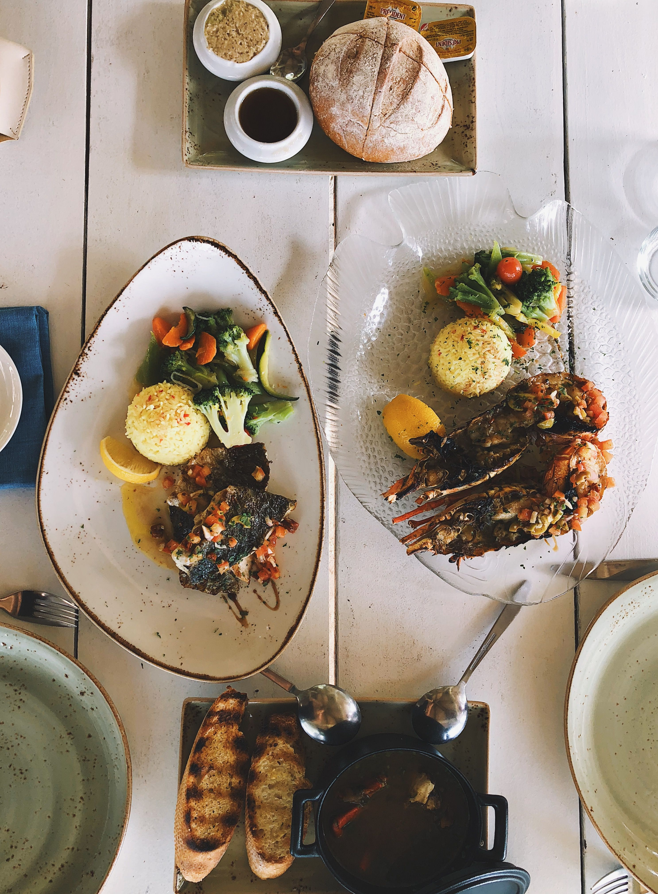

Local Fish and Rice
Experience traditional island meals featuring fresh fish and rice, a popular choice for visitors wanting local flavor.
Enjoy local flavors, familiar favorites, and convenient food options during your stay.

Taniti has 10 restaurants for visitors to enjoy. Five serve mostly local fish and rice, three serve American-style meals, and two serve Pan-Asian cuisine.
Experience traditional island meals featuring fresh fish and rice, a popular choice for visitors wanting local flavor.
Visitors looking for familiar food can choose from restaurants that serve American-style meals.
Taniti also offers Pan-Asian dining options for visitors interested in a variety of regional flavors.
The island has two supermarkets and two smaller grocery stores for snacks, supplies, and travel essentials.
A convenience store is open 24 hours a day for quick purchases and last-minute needs.